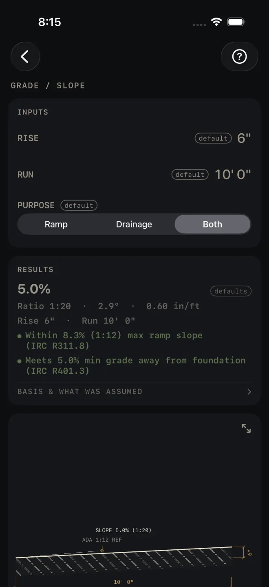
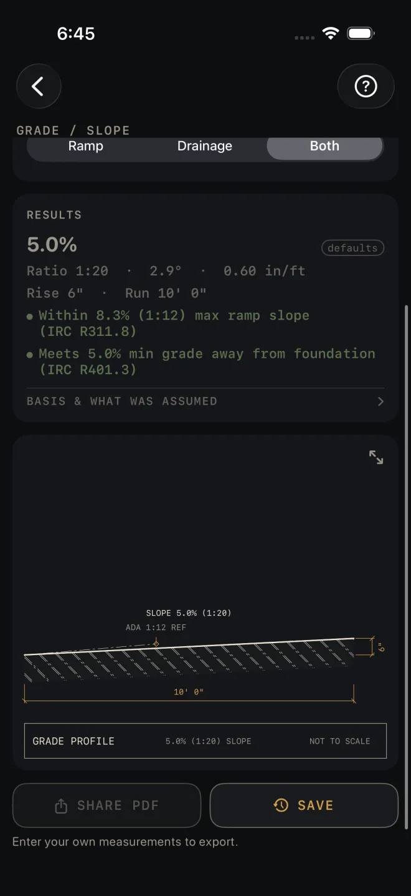

Grade / Slope
What it's for
Turns a rise and a run into a slope, written every way a drawing or an inspector might ask for it: percent, ratio, degrees and inches per foot. It checks the slope against two IRC lines, the maximum for a ramp and the minimum for grade falling away from a foundation, and draws the profile. A PURPOSE row picks the line that fits the job. There is nothing to buy, so there is no material list.
Step by step
The example is the screen as it opens: 6" of rise in 10' 0" of run, PURPOSE Both.

1 2 3 4 5- Enter RISE: the difference in height between the two ends, measured plumb. Take it off a level line, a laser or a transit, not by eye along the ground.
- Enter RUN: the level distance between the same two points. Measure it horizontally, not along the slope.
- Set PURPOSE: Ramp, Drainage or Both. Ramp keeps only the ramp line. Drainage keeps only the foundation line. Both, the default, shows the two of them, and one of them is red whenever the slope is outside 5.0–8.3%.
- Read the headline. On the defaults it is 5.0%, and the line under it gives the same slope as Ratio 1:20 · 2.9° · 0.60 in/ft. The next line repeats your rise and run so you can check what you typed.
- Read the check. The ramp line is for a ramp. The foundation line is for finished grade falling away from a building.
- Tap BASIS & WHAT WAS ASSUMED to see which code edition the two checks come from.
Reading the results

8 9 10 11- The headline is the slope in percent: rise over run. It is dimmed and tagged defaults until you change an input.
- Ratio, degrees, in/ft. The ratio is rounded to a whole number, so 1:20 means one unit of fall in twenty of run. With no rise at all it reads 1:∞ (flat). Inches per foot is the form most crews set a level or a string line to.
- Ramp check. Green reads Within 8.3% (1:12) max ramp slope (IRC R311.8). EXCEEDS 8.3% (1:12) MAX RAMP SLOPE (IRC R311.8) means the slope is steeper than that line. For a ramp, make RUN longer or RISE smaller. For a bank or a swale, this line is not about your job: set PURPOSE to Drainage and it goes away.
- Drainage check. Green reads Meets 5.0% min grade away from foundation (IRC R401.3). BELOW 5.0% MIN GRADE AWAY FROM FOUNDATION (IRC R401.3) means the ground is flatter than that line. For grade next to a building, increase RISE over the same run. For a ramp or a patio, this line is not about your job: set PURPOSE to Ramp and it goes away.
- BASIS & WHAT WAS ASSUMED opens to IRC 2021 — verify local code and a note that states and towns amend the code. Check the edition your building department has adopted before you rely on either check.
- The drawing is the grade in profile with your rise and run on it and a dashed ADA 1:12 REF line to compare against. Pinch to zoom and use the expand button for full screen. See Drawings.
Grade / Slope is a Pro calculator. SHARE PDF and SAVE are
Pro as well, a one-time purchase. SHARE PDF stays dim until you have entered your own measurements. SAVE stays lit, but until then a tap only answers Enter your job's numbers first
and saves nothing.
Common mistakes
- Reading both checks as if both must be green. They pull opposite ways: one wants the slope under a maximum, the other wants it over a minimum. With PURPOSE on Both, a gentle ramp shows the foundation line in red, and that is expected. Set the purpose that matches the work and only its line stays.
- Measuring RUN along the ground. On a steep bank the sloped distance is longer than the level run, and the percent comes out low.
- Mixing the units. RISE opens in inches and RUN in feet and inches. Both take any dimension you type, so a rise of 2' 0" is fine. Just make sure the bottom line of facts repeats what you meant.
Related
- Excavation
- Retaining Wall — when the grade change is too steep to slope
- Stairs — when a ramp will not fit the run you have
- Pythagoras — the sloped length from rise and run
- Drawings
- Saving and history